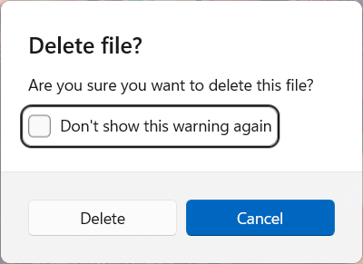

Peek utility
PowerToys Peek utility is a system-wide tool for Windows that lets you preview file content without opening multiple applications or interrupting your workflow. This utility offers a seamless and quick file preview experience for various file types, including images, Office documents, videos, web pages, Markdown files, text files, and developer files. Peek also displays summary information about folders, helping you work more efficiently.

Preview a file
Select a file in File Explorer and open the Peek preview using the activation / deactivation shortcut (default: Ctrl+Space).
Using Left and Right or Up and Down, you can scroll between all files in the current folder. Select multiple files in File Explorer for previewing to scroll only between selected ones.
Pin preview window position and size
The Peek window adjusts its size based on the dimensions of the images being previewed. However, if you prefer to keep the window's size and position, you can use the pinning feature.
By selecting the pinning button, the window will preserve the current size and position. Selecting the pinning button again will unpin the window. When unpinned, the Peek window will return to the default position and size when previewing the next file.
Open file with the default program
Select Open with or Enter to open the current file with the default program.
See extra information about the current file
Hover over the preview to see extra information about the file, including its size, type, and when it was last modified.
Delete files
Press the Delete key to move the current file to the Recycle Bin.
By default, a confirmation dialog will appear before deletions. To skip future confirmations, either:
- Check the "Don't show this warning again" checkbox in the dialog.
- Uncheck the "Ask for confirmation before deleting files" option in Peek's settings page.

After deleting the file, Peek will automatically preview the next file. If there are no more files to preview, a message will be displayed.
Tip
Only files may be deleted. Folders may not be deleted, even if they are empty.
Settings
From the settings page, the following options can be configured:
| Setting | Description |
|---|---|
| Activation shortcut | The customizable keyboard command to open Peek for the selected file(s). |
| Always run without elevation, even when PowerToys is elevated | Tries to run Peek without elevated permissions, to fix access to network shares. |
| Automatically close the Peek window after it loses focus | |
| Confirm before deleting files | When enabled, Peek shows a confirmation dialog before deleting files. |
The following settings are available for source code files but are still in preview:
| Setting | Description |
|---|---|
| Wrap text | When enabled, this option wraps long lines of code in the preview window. |
| Try to format the source for preview | When enabled, this option attempts to format the source code for better readability in the preview window. |
| Font size | Adjust the font size used in the preview window. |
| Enable sticky scroll | When enabled, this option keeps the code preview in sync with the editor's scroll position. |
| Show minimap | When enabled, this option displays a minimap of the code in the preview window. |
Install PowerToys
This utility is part of the Microsoft PowerToys utilities for power users. It provides a set of useful utilities to tune and streamline your Windows experience for greater productivity. To install PowerToys, see Installing PowerToys.